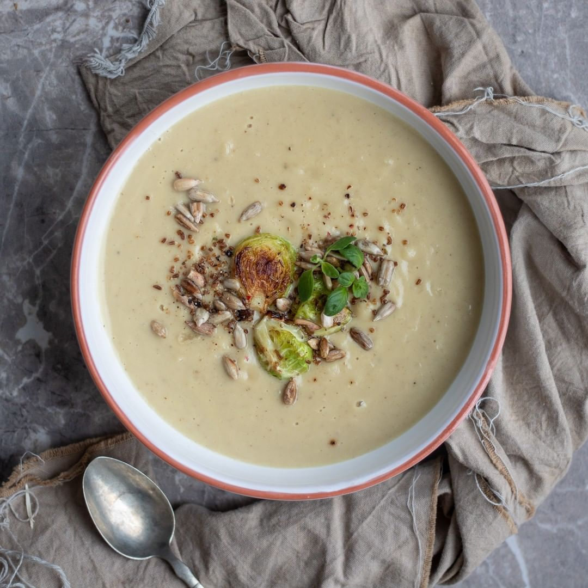

Zimná polievka podľa @jemezdravo.eu — Normy Jedál
Krémové polievky sú v zime ideálne, kel navyše obsahuje veľké množstvo minerálov a vitamínov.
🥬 Jemná krémová polievka s kelom 🥬
Príprava: 10 minút
Tepelná úprava: 30 minút
Náročnosť: ľahké
Počet porcií: 4
Vhodné pre vegánov, bez laktózy, bez lepku
Nutričné hodnoty 1 porcie: 364 kcal 11,17 g bielkovín 26,74 g sacharidov 24,1 g tukov
INGREDIENCIE:
1 stredná žltá cibuľa
1 strúčik cesnaku
400 g hlávkového kelu
2 lyžice slnečnicového oleja
750 ml zeleninového vývaru
1 lyžička drvenej rasce
1 lyžička sušeného majoránu
200 ml sójovej smotany (môžete nahradiť ľubovoľnou na varenie)
4 lyžice pražených nelúpaných slnečnicových semienok na ozdobu
pár lístkov čerstvého majoránu na ozdobu
1 lyžička soli
½ lyžičky mletého čierneho korenia
POSTUP:
1. Cibuľu a cesnak očistite a nakrájajte nadrobno. Kel nakrájajte na pásiky.
2. V hrnci rozohrejte olej a cibuľu s cesnakom orestujte na strednom stupni. Primiešajte kel, zalejte vývarom a priveďte do varu.
3. Do polievky pridajte soľ, korenie, drvenú rascu a sušený majorán. Varte na miernom plameni, kým kel nezmäkne (20 minút).
4. Všetko rozmixujte tyčovým mixérom na jemný krém a vmiešajte smotanu.
5. Polievku ozdobte praženými slnečnicovými semienkami a čerstvým majoránom a podávajte.
#polievka #polievky #kremovapolievky #kel #kelovapolievka #zltacibula #zimnapolievka #zima #zimnejedlo #obedovapolievka #polievocka #varime #casnaobed #smotana #polievkajezaklad #chutnerecepty #kedzdraviechuti #zdravemenu #vkuchyni #domacakuchyna #zijemzdravo #recepty #zdravoachutne #zdravo #topjedlo #zdravoafit #fitreceptysk #mojejedlo #dnesvarim #dnesobedujem